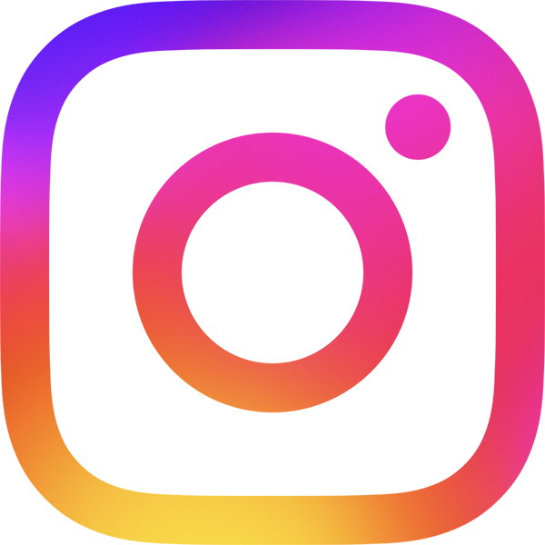
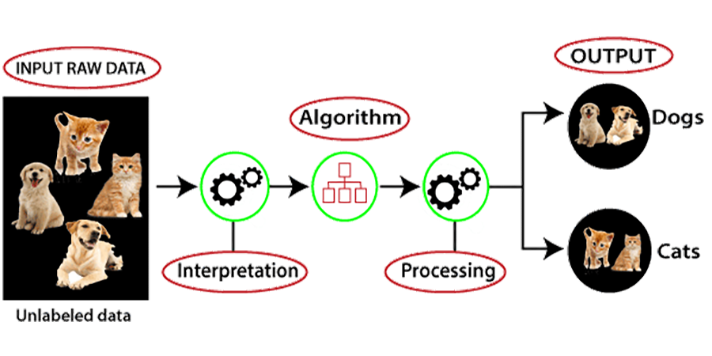
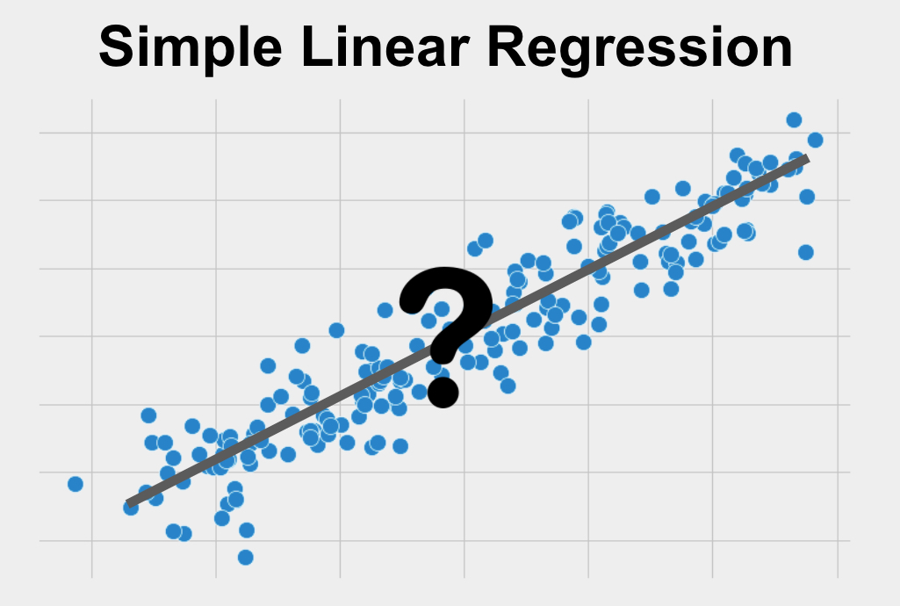
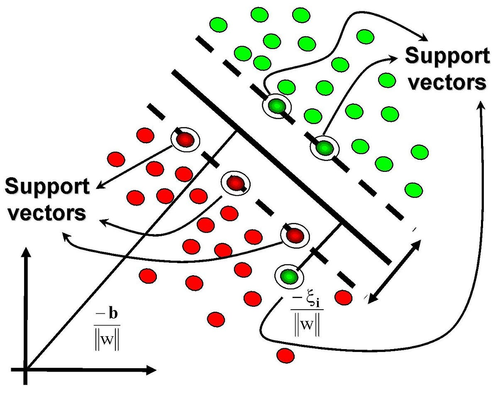
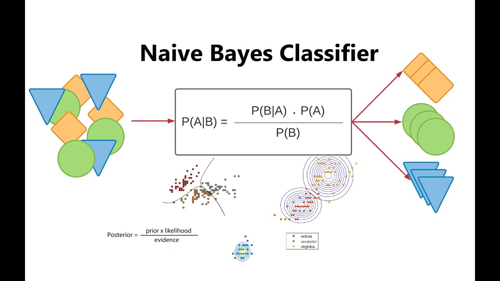
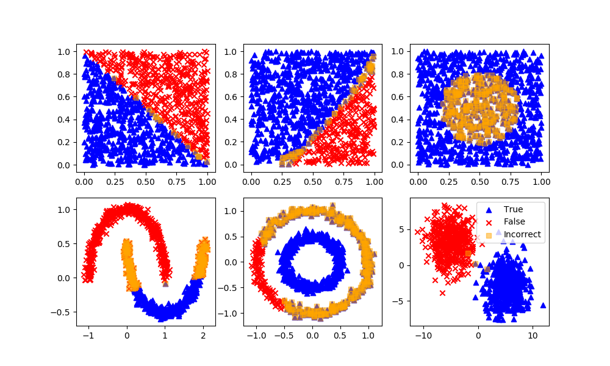
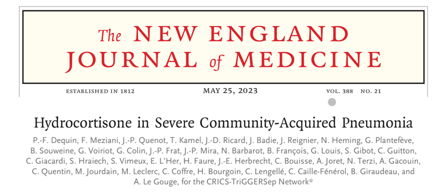
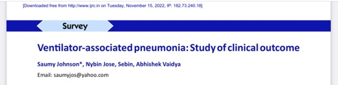

Clinical Artificial Intelligence
A look under the hood
FICM Intensivists in Training Conference
November 2025
alexander.jackson@soton.ac.uk
“I propose to consider the question ‘Can machines think?’”
Alan Turing, 1950
You probably use it every day





Unsupervised learning


Down the rabbit hole…







What does a revolution look like?


The Revolution in healthcare


Or Evolution?


A little closer to home


Lets keep it simple

Reporting standards

Which one do you trust?


